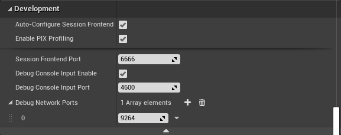
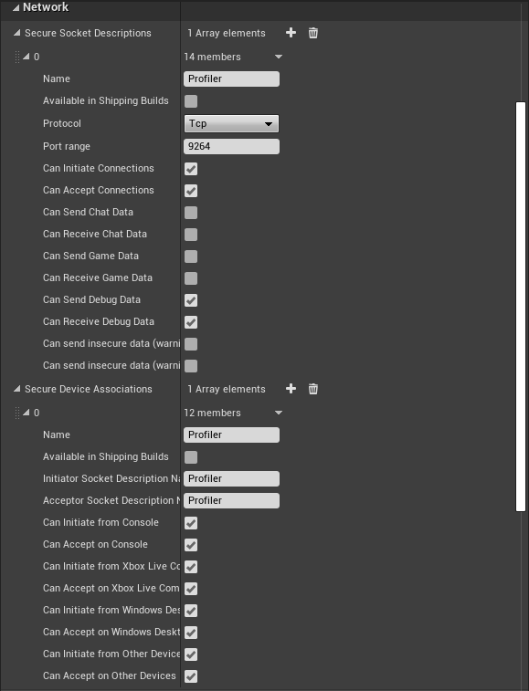

UE4 Integration 2.01
Some platforms require some extra steps to run properly.
Check the Extras folder in the integration distribution package for platforms not found here.
To deploy on Android, make sure FMODStudio is in your game's directory, not in the Engine plugins directory. When FMODStudio is in your game's plugin directory, the engine will rebuild the plugin for Android and deploy all the files properly.
FMOD supports DSP plugins, which will be stand-alone .so files that will need to be packaged into the build. Add the .so file into the FMODStudio/Binaries/Android/{Architecture} directory. Unreal will also need an APL file so it knows to package the .so file. To do this, you will need to write an APL file and drop it into the FMODStudio/Binaries/Android directory. The FMODStudio.build.cs file looks for any file ending with __APL.xml_ and will pass that along to the unreal build tool for packaging.
The APL is a custom xml file format which is documented in the engine file AndroidPluginLanguage.cs. Here is a sample APL file for libovrfmod.so:
<?xml version="1.0" encoding="utf-8"?>
<!--Plugin additions-->
<root xmlns:android="http://schemas.android.com/apk/res/android">
<!-- init section is always evaluated once per architecture -->
<init>
<log text="ovrfmod APL init"/>
</init>
<!-- optional files or directories to copy to Intermediate/Android/APK -->
<resourceCopies>
<log text="ovrfmod APL copying files for $S(Architecture)/"/>
<copyFile src="$S(PluginDir)/$S(Architecture)/libovrfmod.so"
dst="$S(BuildDir)/libs/$S(Architecture)/libovrfmod.so" />
</resourceCopies>
<!-- optional libraries to load in GameActivity.java before libUE4.so -->
<soLoadLibrary>
<log text="ovrfmod APL adding loadLibrary references"/>
<loadLibrary name="ovrfmod" failmsg="ovrfmod not loaded and required!" />
</soLoadLibrary>
</root>
You only need to write this if you want to load a DSP plugin on Android.
Banks for Android are expected to be located in the Mobile sub-directory of the Studio built banks output directory. This sub-directory name is hardcoded in the integration so if you want to use a different location you would need to modify the integration source code.
To package the Android banks add these lines to Platforms\Android\Config\AndroidGame.ini:
[/Script/UnrealEd.ProjectPackagingSettings]
-DirectoriesToAlwaysStageAsNonUFS=(Path="FMOD/Desktop")
+DirectoriesToAlwaysStageAsNonUFS=(Path="FMOD/Mobile")
4.24
The location of AndroidGame.ini is Config\Android\AndroidGame.ini
To enable Live Update the UE4 XSX project settings must be modified to allow FMOD to open the Live Update port from the running game. Access the settings by opening the Project Settings editor from the Edit menu, then navigate to Xbox One GDK platform settings. Under the Development category, add the following entry to the Debug Network Ports setting:

Banks for the Xbox Series X|S are expected to be located in the Scarlett sub-directory of the Studio built banks output directory. This sub-directory name is hardcoded in the integration so if you want to use a different location you would need to modify the integration source code.
To package the Xbox Series X|S specific banks add these lines to Platforms\XSX\Config\XSXGame.ini:
[/Script/UnrealEd.ProjectPackagingSettings]
-DirectoriesToAlwaysStageAsNonUFS=(Path="FMOD/Desktop")
+DirectoriesToAlwaysStageAsNonUFS=(Path="FMOD/Scarlett")
To enable Live Update the UE4 Xbox One GDK project settings must be modified to allow FMOD to open the Live Update port from the running game. Access the settings by opening the Project Settings editor from the Edit menu, then navigate to Xbox One GDK platform settings. Under the Development category, add the following entry to the Debug Network Ports setting:
Banks for the Xbox One are expected to be located in the XboxOne sub-directory of the Studio built banks output directory. This sub-directory name is hardcoded in the integration so if you want to use a different location you would need to modify the integration source code.
To package the Xbox One specific banks add these lines to Platforms\XboxOne\Config\XboxOneGame.ini, replacing MyGame with your project's name:
[/Script/UnrealEd.ProjectPackagingSettings]
-DirectoriesToAlwaysStageAsNonUFS=(Path="FMOD/Desktop")
+DirectoriesToAlwaysStageAsNonUFS=(Path="FMOD/XboxOne")
[Staging]
+WhitelistDirectories=MyGame/Content/FMOD/Desktop
Banks for Game Core Desktop are expected to be located in the Desktop sub-directory of the Studio built banks output directory. This sub-directory name is hardcoded in the integration so if you want to use a different location you would need to modify the integration source code.
The Unreal Build Tool will block packaging of the Desktop directory unless it is explicitly whitelisted. To whitelist the directory add these lines to Platforms\WinGDK\Config\WinGDKGame.ini, replacing MyGame with your project's name:
[Staging]
+WhitelistDirectories=MyGame/Content/FMOD/Desktop
Banks for iOS are expected to be located in the Mobile sub-directory of the Studio built banks output directory. This sub-directory name is hardcoded in the integration so if you want to use a different location you would need to modify the integration source code.
To package the iOS banks add these lines to Platforms\IOS\Config\IOSGame.ini:
[/Script/UnrealEd.ProjectPackagingSettings]
-DirectoriesToAlwaysStageAsNonUFS=(Path="FMOD/Desktop")
+DirectoriesToAlwaysStageAsNonUFS=(Path="FMOD/Mobile")
4.24
The location of IOSGame.ini is Config\IOS\IOSGame.ini
Using remote build to build for iOS on Windows using the FMOD Studio plugin requires some additional files to be copied to the remote Mac. To tell UE4 to copy the additional files add a file named RsyncProject.txt to the directory <ue4_project_root>/Build/Rsync (you may need to create this directory). The RsyncProject.txt file needs to contain this line:
+ /Plugins/FMODStudio/Binaries/IOS/**
To build for tvOS, make sure FMODStudio is in your game's directory and not in the Engine plugins directory.
Banks for tvOS are expected to be located in the Mobile sub-directory of the Studio built banks output directory. This sub-directory name is hardcoded in the integration so if you want to use a different location you would need to modify the integration source code.
To package the correct banks add these lines to Platforms\TVOS\Config\TVOSGame.ini:
[/Script/UnrealEd.ProjectPackagingSettings]
-DirectoriesToAlwaysStageAsNonUFS=(Path="FMOD/Desktop")
+DirectoriesToAlwaysStageAsNonUFS=(Path="FMOD/Mobile")
4.24
The location of TVOSGame.ini is Config\TVOS\TVOSGame.ini
To deploy on linux, you will need to rebuild the engine from source via github. For compiling linux from windows, see this page for instructions how to get up and running with UE4. Then, add in both the fmodstudio linux .zip and windows .zip on top of each other into the engine plugins directory.
The last thing you will need to do is to get the FMOD .so libraries into a directory that the executable can read them. The easiest way is to copy them from
<DeployedDir>\Engine\Plugins\FMODStudio\Binaries\Linux\x86_64
to
<DeployedDir>\<GameName>\Binaries\Linux
To see what directories the .so files can be located, look at LinuxToolChain.cs. Currently there are only a set of hard coded directories that are supported.
Banks for the PS4 are expected to be located in the PS4 sub-directory of the Studio built banks output directory. This sub-directory name is hardcoded in the integration so if you want to use a different location you would need to modify the integration source code.
To package the PS4 specific banks add these lines to Platforms\PS4\Config\PS4Game.ini:
[/Script/UnrealEd.ProjectPackagingSettings]
-DirectoriesToAlwaysStageAsNonUFS=(Path="FMOD/Desktop")
+DirectoriesToAlwaysStageAsNonUFS=(Path="FMOD/PS4")
Banks for the PS5 are expected to be located in the PS5 sub-directory of the Studio built banks output directory. This sub-directory name is hardcoded in the integration so if you want to use a different location you would need to modify the integration source code.
To package the PS5 specific banks add these lines to Platforms\PS5\Config\PS5Game.ini:
[/Script/UnrealEd.ProjectPackagingSettings]
-DirectoriesToAlwaysStageAsNonUFS=(Path="FMOD/Desktop")
+DirectoriesToAlwaysStageAsNonUFS=(Path="FMOD/PS5")
Banks for the Stadia are expected to be located in the Stadia sub-directory of the Studio built banks output directory. This sub-directory name is hardcoded in the integration so if you want to use a different location you would need to modify the integration source code.
To package the Stadia specific banks add these lines to Platforms\Stadia\Config\StadiaGame.ini:
[/Script/UnrealEd.ProjectPackagingSettings]
-DirectoriesToAlwaysStageAsNonUFS=(Path="FMOD/Desktop")
+DirectoriesToAlwaysStageAsNonUFS=(Path="FMOD/Stadia")
Banks for the Switch are expected to be located in the Switch sub-directory of the Studio built banks output directory. This sub-directory name is hardcoded in the integration so if you want to use a different location you would need to modify the integration source code.
To package the Switch specific banks add these lines to Platforms\Switch\Config\SwitchGame.ini:
[/Script/UnrealEd.ProjectPackagingSettings]
-DirectoriesToAlwaysStageAsNonUFS=(Path="FMOD/Desktop")
+DirectoriesToAlwaysStageAsNonUFS=(Path="FMOD/Switch")
To enable FMOD Studio the use of any microphone input, including Kinect, on the Xbox One. The Engine ini file specific for the platform, located in '/Config/XboxOne/XboxOneEngine.ini', needs to have the following lines added:
[AppxManifest]
Package.Capabilities.mx:Capability[0].Name=kinectAudio
Package.Capabilities.mx:Capability[1].Name=kinectGamechat
To enable Live Update the UE4 Xbox One project settings must be modified to allow FMOD to open the Live Update port from the running game. Access the settings by opening the Project Settings editor from the Edit menu, then navigate to Xbox One platform settings. Under the Network category, add the following entries to the Secure Socket Descriptions and Secure Socket Associations settings:

Banks for the Xbox One are expected to be located in the XboxOne sub-directory of the Studio built banks output directory. This sub-directory name is hardcoded in the integration so if you want to use a different location you would need to modify the integration source code.
To package the Xbox One specific banks add these lines to Platforms\XboxOne\Config\XboxOneGame.ini:
[/Script/UnrealEd.ProjectPackagingSettings]
-DirectoriesToAlwaysStageAsNonUFS=(Path="FMOD/Desktop")
+DirectoriesToAlwaysStageAsNonUFS=(Path="FMOD/XboxOne")
If you get a deployment error "resource.resw is in use by other process", go to the MyGame/Config/DefaultGame.ini and remove the following:
-CulturesToStage=en
+CulturesToStage=en
This has been solved in 2.01.07, you only need to follow these steps if you are using an older version.
Add the following to GetFilesToDeployOrStage in XboxOnePlatform.Automation.cs, before the end of the function:
// FMOD code start
DirectoryReference FMODDLLPath = null;
if (Directory.Exists(Path.Combine(SC.ProjectRoot.ToString(), "Plugins/FMODStudio")))
{
FMODDLLPath = DirectoryReference.Combine(SC.ProjectRoot, "Plugins/FMODStudio/Binaries/XBoxOne/");
}
else if (Directory.Exists(Path.Combine(SC.LocalRoot.ToString(), "Engine/Plugins/FMODStudio")))
{
FMODDLLPath = DirectoryReference.Combine(SC.LocalRoot, "Engine/Plugins/FMODStudio/Binaries/XBoxOne/");
}
else
{
LogError("Failed to find FMODStudio plugin in game or engine directory");
}
if (FMODDLLPath != null)
{
Log.TraceInformation("Copying FMOD dlls to loose directory: " + RelativeBinPath);
StagedDirectoryReference RelativeBinPathRef = new StagedDirectoryReference(RelativeBinPath);
StageFileIfExists(StagedFileType.NonUFS, FileReference.Combine(FMODDLLPath, "fmod.dll"), RelativeBinPathRef, SC);
StageFileIfExists(StagedFileType.NonUFS, FileReference.Combine(FMODDLLPath, "fmodL.dll"), RelativeBinPathRef, SC);
StageFileIfExists(StagedFileType.NonUFS, FileReference.Combine(FMODDLLPath, "fmodstudio.dll"), RelativeBinPathRef, SC);
StageFileIfExists(StagedFileType.NonUFS, FileReference.Combine(FMODDLLPath, "fmodstudioL.dll"), RelativeBinPathRef, SC);
}
// FMOD code end
Add the following to PrepTargetForDeployment in XboxOneDeploy.cs, in the same scope as 'DestDir':
// FMOD code start
string FMODDLLPath = null;
if (Directory.Exists(Path.Combine(ProjectDirectory.FullName, "Plugins/FMODStudio")))
{
FMODDLLPath = Path.Combine(ProjectDirectory.FullName, "Plugins/FMODStudio/Binaries/XBoxOne/");
}
else if (Directory.Exists(Path.Combine(RelativeEnginePath, "Plugins/FMODStudio")))
{
FMODDLLPath = Path.Combine(RelativeEnginePath, "Plugins/FMODStudio/Binaries/XBoxOne/");
}
else
{
Log.TraceWarning("Failed to find FMODStudio plugin in game or engine directory");
}
if (FMODDLLPath != null)
{
Log.TraceInformation("...copying the FMOD dlls...");
string FMODDLLName = "fmod.dll";
Log.TraceInformation("\tcopying " + FMODDLLPath + FMODDLLName + " to " + DestDir + "/" + FMODDLLName);
CopyFile(FMODDLLPath + FMODDLLName, DestDir + "/" + FMODDLLName, true);
FMODDLLName = "fmodL.dll";
Log.TraceInformation("\tcopying " + FMODDLLPath + FMODDLLName + " to " + DestDir + "/" + FMODDLLName);
CopyFile(FMODDLLPath + FMODDLLName, DestDir + "/" + FMODDLLName, true);
FMODDLLName = "fmodstudio.dll";
Log.TraceInformation("\tcopying " + FMODDLLPath + FMODDLLName + " to " + DestDir + "/" + FMODDLLName);
CopyFile(FMODDLLPath + FMODDLLName, DestDir + "/" + FMODDLLName, true);
FMODDLLName = "fmodstudioL.dll";
Log.TraceInformation("\tcopying " + FMODDLLPath + FMODDLLName + " to " + DestDir + "/" + FMODDLLName);
CopyFile(FMODDLLPath + FMODDLLName, DestDir + "/" + FMODDLLName, true);
}
// FMOD code end